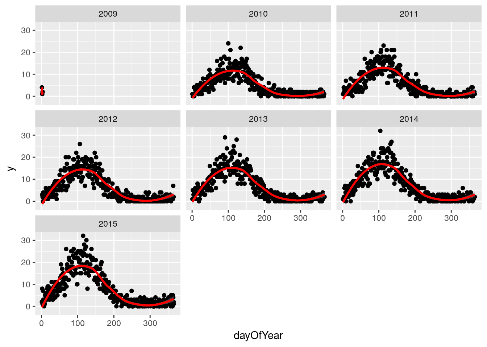
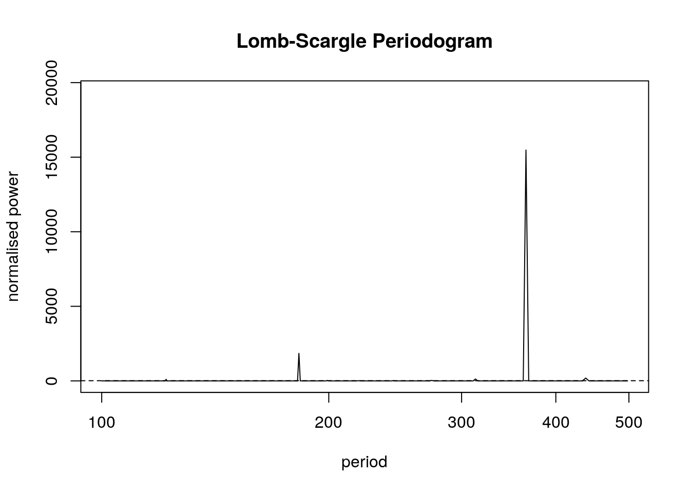
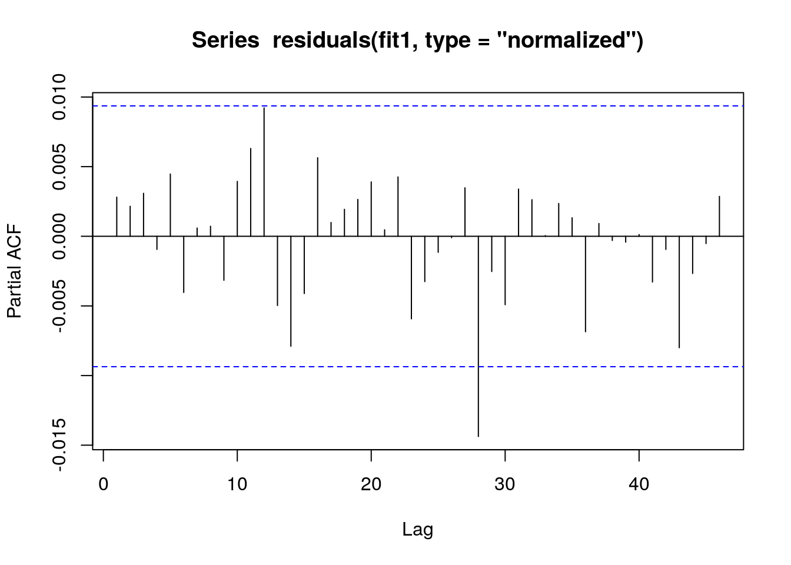

Chapter 6 Panel data: multiple areas without autocorrelation
6.1 Aim
We are given a dataset containing daily counts of diseases from multiple geographical areas. We want to identify:
- Does seasonality exist?
- If seasonality exists, when are the high/low seasons?
- Is there a general yearly trend (i.e. increasing or decreasing from year to year?)
6.2 Creating the data
The data for this chapter is available at: http://rwhite.no/longitudinal_analysis/data/chapter_6.csv
library(data.table)
library(ggplot2)
set.seed(4)
AMPLITUDE <- 1.5
SEASONAL_HORIZONTAL_SHIFT <- 20
fylkeIntercepts <- data.table(fylke=1:20,fylkeIntercepts=rnorm(20))
d <- data.table(date=seq.Date(
from=as.Date("2010-01-01"),
to=as.Date("2015-12-31"),
by=1))
d[,year:=as.numeric(format.Date(date,"%G"))]
d[,week:=as.numeric(format.Date(date,"%V"))]
d[,month:=as.numeric(format.Date(date,"%m"))]
temp <- vector("list",length=20)
for(i in 1:20){
temp[[i]] <- copy(d)
temp[[i]][,fylke:=i]
}
d <- rbindlist(temp)
d[,yearMinus2000:=year-2000]
d[,dayOfSeries:=1:.N]
d[,dayOfYear:=as.numeric(format.Date(date,"%j"))]
d[,seasonalEffect:=sin(2*pi*(dayOfYear-SEASONAL_HORIZONTAL_SHIFT)/365)]
d[,mu := exp(0.1 + yearMinus2000*0.1 + seasonalEffect*AMPLITUDE)]
d[,y:=rpois(.N,mu)]
fwrite(d,"data/chapter_6.csv")6.3 Investigation
We then drill down into a few years for fylke 1, and see a clear seasonal trend
q <- ggplot(d[fylke==1],aes(x=dayOfYear,y=y))
q <- q + facet_wrap(~year)
q <- q + geom_point()
q <- q + stat_smooth(colour="red")
q## `geom_smooth()` using method = 'loess'
The Lomb-Scargle Periodogram shows a clear seasonality with a period of 365 days
// STATA CODE STARTS
insheet using "chapter_6.csv", clear
sort fylke date
by fylke: gen time=_n
tsset fylke time, daily
wntestb y if fylke==1
cumsp y if fylke==1, gen(cumulative_spec_dist)
by fylke: gen period=_N/_n
browse cumulative_spec_dist period
// STATA CODE ENDS# RCODE
lomb::lsp(d$y,from=100,to=500,ofac=1,type="period")
6.4 Regression
First we create an id variable. This generally corresponds to geographical locations, or people. In this case, we only have one geographical location, so our id for all observations is 1. This lets the computer know that all data belongs to the same group.
When we have panel data with multiple areas, we use the MASS::glmPQL function in R and the meglm function in STATA. In R we identify the geographical areas with random = ~ 1 | fylke and in STATA with || fylke:.
// STATA CODE STARTS
gen cos365=cos(dayofyear*2*_pi/365)
gen sin365=sin(dayofyear*2*_pi/365)
meglm y yearminus2000 || fylke:, family(poisson) iter(10)
estimates store m1
meglm y yearminus2000 cos365 sin365 || fylke:, family(poisson) iter(10)
estimates store m2
predict resid, anscombe
lrtest m1 m2
// STATA CODE ENDS# R CODE
d[,cos365:=cos(dayOfYear*2*pi/365)]
d[,sin365:=sin(dayOfYear*2*pi/365)]
fit0 <- MASS::glmmPQL(y~yearMinus2000, random = ~ 1 | fylke,
family = poisson, data = d)## iteration 1fit1 <- MASS::glmmPQL(y~yearMinus2000 + sin365 + cos365, random = ~ 1 | fylke,
family = poisson, data = d)## iteration 1print(lmtest::lrtest(fit0, fit1))## Likelihood ratio test
##
## Model 1: y ~ yearMinus2000
## Model 2: y ~ yearMinus2000 + sin365 + cos365
## #Df LogLik Df Chisq Pr(>Chisq)
## 1 4
## 2 6 2We see that the likelihood ratio test for sin365 and cos365 was significant, meaning that there is significant seasonality with a 365 day periodicity in our data (which we already strongly suspected due to the periodogram).
We can now run/look at the results of our main regression.
print(summary(fit1))## Linear mixed-effects model fit by maximum likelihood
## Data: d
## AIC BIC logLik
## NA NA NA
##
## Random effects:
## Formula: ~1 | fylke
## (Intercept) Residual
## StdDev: 1.584549e-05 0.9976713
##
## Variance function:
## Structure: fixed weights
## Formula: ~invwt
## Fixed effects: y ~ yearMinus2000 + sin365 + cos365
## Value Std.Error DF t-value p-value
## (Intercept) 0.1122536 0.014488403 43797 7.7478 0
## yearMinus2000 0.0989047 0.001109477 43797 89.1453 0
## sin365 1.4095095 0.003695341 43797 381.4288 0
## cos365 -0.5109375 0.003083683 43797 -165.6907 0
## Correlation:
## (Intr) yM2000 sin365
## yearMinus2000 -0.979
## sin365 -0.150 0.000
## cos365 0.065 -0.001 -0.151
##
## Standardized Within-Group Residuals:
## Min Q1 Med Q3 Max
## -3.19682240 -0.82387498 -0.07501834 0.63400484 5.82452468
##
## Number of Observations: 43820
## Number of Groups: 206.5 Residual analysis
We see that there is no evidence of autoregression in the residuals
// STATA CODE STARTS
pac resid if fylke==1
// STATA CODE ENDS# R CODE
pacf(residuals(fit1, type = "normalized")) # this is for AR
We see that there is no evidence of autoregression in the residuals
// STATA CODE STARTS
ac resid if fylke==1
// STATA CODE ENDS# R CODE
acf(residuals(fit1, type = "normalized")) # this is for MAWe also obtain the same estimates that we did in the last chapter.
b1 <- 1.4007640 # sin coefficient
b2 <- -0.5234863 # cos coefficient
amplitude <- sqrt(b1^2 + b2^2)
p <- atan(b1/b2) * 365/2/pi
if (p > 0) {
peak <- p
trough <- p + 365/2
} else {
peak <- p + 365/2
trough <- p + 365
}
if (b1 < 0) {
g <- peak
peak <- trough
trough <- g
}
print(sprintf("amplitude is estimated as %s, peak is estimated as %s, trough is estimated as %s",round(amplitude,2),round(peak),round(trough)))## [1] "amplitude is estimated as 1.5, peak is estimated as 112, trough is estimated as 295"print(sprintf("true values are: amplitude: %s, peak: %s, trough: %s",round(AMPLITUDE,2),round(365/4+SEASONAL_HORIZONTAL_SHIFT),round(3*365/4+SEASONAL_HORIZONTAL_SHIFT)))## [1] "true values are: amplitude: 1.5, peak: 111, trough: 294"